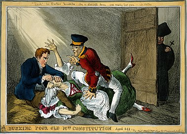

WIKIPEDIA
welcome to wikipedia
- Arts
- Biography
- Geography
- Hystory
- Mathematics
- Sciensce
From today's featured article
Confusion is a 1975 studio album by Nigerian Afrobeat musician Fela Kuti (pictured) and his band. It was arranged, composed, and produced by Kuti, who emphasized his African heritage and nationalism on the album. Confusion is a commentary on post-colonial Lagos and its lack of infrastructure and proper leadership. Kuti's pidgin English lyrics depict difficult conditions in the city, including frenetic, multilingual street markets and inextricable traffic jams at Lagos' major intersections. Confusion is a one-song Afrobeat album with an entirely instrumental first half featuring free form interplay between Kuti's electric piano and Tony Allen's percussion. It leads to an extended mid-tempo section with polyrhythms by Allen and tenor saxophone by Kuti, who follows with call-and-response vocal passages. Since the record's release by EMI, it has been praised by music critics, who found it exemplary of Kuti's Afrobeat style and recommended it as a highlight from his extensive catalog. In both 2000 and 2010, Confusion was reissued and bundled with Kuti's 1973 Gentleman album. (Full article...)
In the news
In the United States, at least 60 people are killed and more than 500 others injured in a mass shooting at a concert in Las Vegas (location pictured).
Amidst a constitutional crisis, an independence referendum takes place in Catalonia, Spain.
In Saudi Arabia, a decree by King Salman effectively removes a longstanding ban on women driving in the country.
Did you know...
- ... that after Silence=Death posters (pictured) appeared around Manhattan, William Olander created a New Museum exhibit highlighting public indifference to AIDS victims?
- ... that Linguamyrmex vladi is named for Vlad the Impaler, who was the inspiration for Count Dracula?
- ... that accordionist Vincent Peirani and pianist Michael Wollny, both multiple ECHO Jazz winners, recorded the "symbiotic" album Tandem?
- ... that during the Sprague Fire in Glacier National Park, the interior of the historic Sperry Chalet completely burned, leaving only the exterior stone walls standing?
- ... that The Inquiry, a study group established by US President Woodrow Wilson to make recommendations for the 1919 Paris Peace Conference, suggested that Crimea should be given to Ukraine?
- ... that Tajama Abraham survived Hurricane Hugo by hiding in a commercial refrigerator with her family?
- ... that the plain-breasted piculet is usually inconspicuous but may be detected by the pecking sounds it makes while foraging?
- ... that the lack of breakfast pushed Mab Copland Lineman to fight against a labor union?
On this day...
- 2333 BC – According to Korean legend, Dangun, the "grandson of heaven", established Gojoseon, the first Korean kingdom.
- 1952 – The United Kingdom successfully completed a nuclear test to become the world's third nuclear power.
- 1963 – Oswaldo López Arellano replaced Honduran President Ramón Villeda Morales (pictured) in a violent coup and initiated two decades of military rule.
- 1981 – The hunger strike by Irish Republican Army prisoners at HM Prison Maze in Belfast ended after seven months and ten deaths.
- 2008 – The Emergency Economic Stabilization Act of 2008, establishing the Troubled Asset Relief Program, commonly referred to as a bailout of the U.S. financial system, was enacted.
Today's featured picture

Burking Poor Old Mrs Constitution, Aged 141 (1829), a satirical cartoon by the British artist William Heath (1794–1840). It depicts the Duke of Wellington and Robert Peel in the roles of the body-snatchers Burke and Hare, suffocating Mrs Docherty for sale to Dr Knox. This cartoon represents Wellington's and Peel's perceived extinguishing of the Constitution of 1688 through the Catholic Emancipation, particularly the Roman Catholic Relief Act of 1829.
Illustration: William Heath
Recently featured: Bellevue Palace Venus and Mars Frederick Roberts, 1st Earl Roberts
Other areas of Wikipedia
Community portal – Bulletin board, projects, resources and activities covering a wide range of Wikipedia areas.
Help desk – Ask questions about using Wikipedia.
Local embassy – For Wikipedia-related communication in languages other than English.
Reference desk – Serving as virtual librarians, Wikipedia volunteers tackle your questions on a wide range of subjects.
Site news -Announcements, updates, articles and press releases on Wikipedia and the Wikimedia Foundation.
Village pump – For discussions about Wikipedia itself, including areas for technical issues and policies.